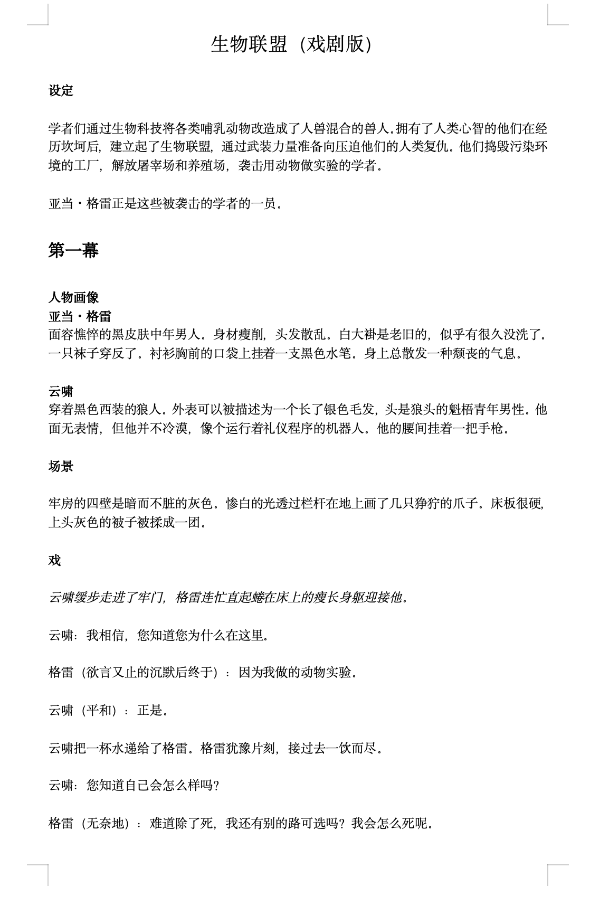
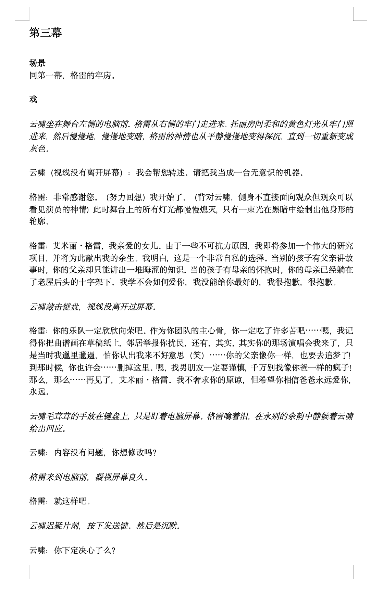

A SCIENCE-FICTION PLAY
Bio-League
生物联盟
In a future shaped by biotechnology, scientists have given animals human-level intelligence. After years of exploitation, these human-animal hybrids form the Bio-League—and begin taking revenge on the people who once controlled them.
Adam Gray, a human geneticist captured for his animal experiments, is supposed to become one of their victims. Instead, he is offered a choice: die as their enemy, or continue his research for them.

ACT I
The Father
Gray is a human scientist awaiting execution. Yun Xiao, the wolf-man guarding him, should have every reason to hate him.
Then they begin talking about their daughters.
Gray's daughter is still alive. Yun Xiao's daughter was an ordinary wolf.
“你怀念作为狼的时候吗？”
云啸思考了很久。
“我不知道。”
幕落。“Do you miss being a wolf?”
Yun Xiao thinks for a long time.
“I don't know.”
Curtain.
ACT II
The Mother
Tori is a sheep, a scientist, and a mother.
She and Gray stand on opposite sides of the conflict, but they have more in common than either of them expects. Both are researchers. Both are parents. Both have lost part of their families.
When a group of children rushes toward something Tori does not want them to see, Gray quietly closes the curtain for her.
For a moment, the human prisoner and the woman who may condemn him understand each other simply as parents.
“谢谢。”
“Thank you.”
ACT III
The Choice
Gray decides to join the Bio-League because he wants to live.
But joining means leaving his old life behind. Before that happens, he is allowed to send one final message to his daughter.
“找男朋友一定要谨慎，千万别找像你爸一样的疯子！”
“Be careful when you choose a boyfriend. Whatever you do, don't find a lunatic like your dad.”
After the message is sent, Gray finally says what has been driving his decision.
“我不是一名战士，我不是好父亲，我也不是什么志向远大的学者，我不想在代表大会上被掏出心脏——我想活着。”
“I am not a soldier. I am not a good father. I am not some ambitious scholar. I don't want to die at the assembly—I want to live.”
“明明我们都懂得爱，也希望去爱，渴望爱。为什么会变成这样呢。”
“We all know how to love. We want to love. We long to love. So why did we become like this?”
Curtain.

ACT IV
The Reversal
Gray is accepted into the Bio-League.
At the induction ceremony, however, he turns against them.
The organization was created to resist humanity's cruelty toward animals. But Gray has come to believe that, once given power, it has begun repeating the same logic it once fought against.
“痛恨人类的罪行，自己却在做同样的事！”
“You hate humanity for its crimes, yet you are doing the same things yourselves.”
“明明憎恶人类却必须模仿人类的一切！”
“You despise humanity, yet you have ended up imitating everything human.”
ONE QUESTION
Who gets to decide?
Humans justify their power over animals through intelligence.
The Bio-League imagines creating beings whose intelligence would exceed humanity's by as much as humanity's exceeds other animals.
If intelligence gives humans the right to rule other species, would a more intelligent species have the right to rule humans?
AFTER THE PLAY
About the Characters
After the final curtain, I added notes about the characters.
Maybe he feared what his research would become. Maybe he could not face helping destroy humanity. Maybe he was afraid of becoming another Tori. Or maybe he really thought he was helping her end her suffering.
“他为什么要杀托丽？我不知道。”
“Why did he kill Tori? I don't know.”